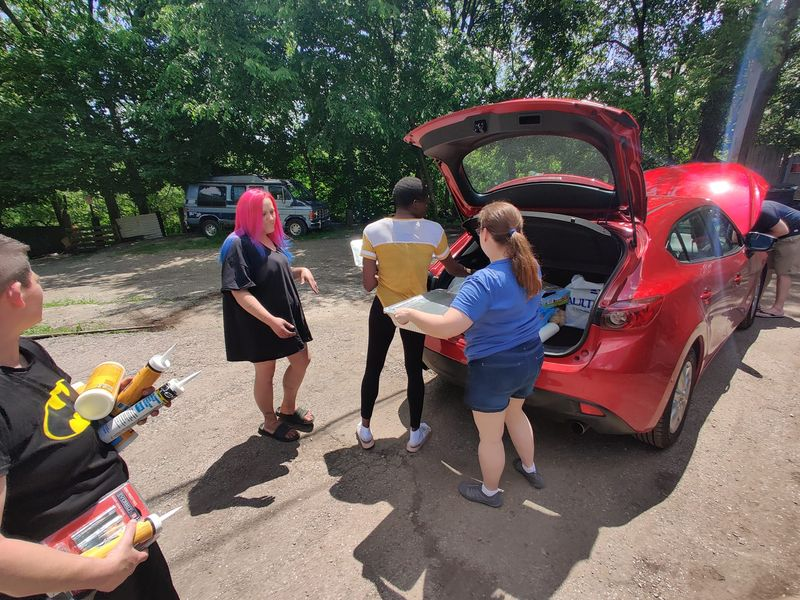

Timeline photos
I have been so ragingly furious about all the systems in America that are supposed to serve and protect you yet repeatedly do the opposite.
But I can feel myself turning the corner as I start to get my head back to the other side of America. You. WONDERFUL, INCREDIBLE, AMAZING YOU.
Here is a picture of my sister-in-law bringing left over food from my niece's high school graduation to our tent village. But not only did she bring the chicken and potatoes and rolls and countless other things, she warmed it all up and made sure people had plates and utensils.
The homeless people, of course, helped her unload, were incredibly thankful and gracious and said a prayer before eating.
I know America is going to be ok because it is made up of people like you.